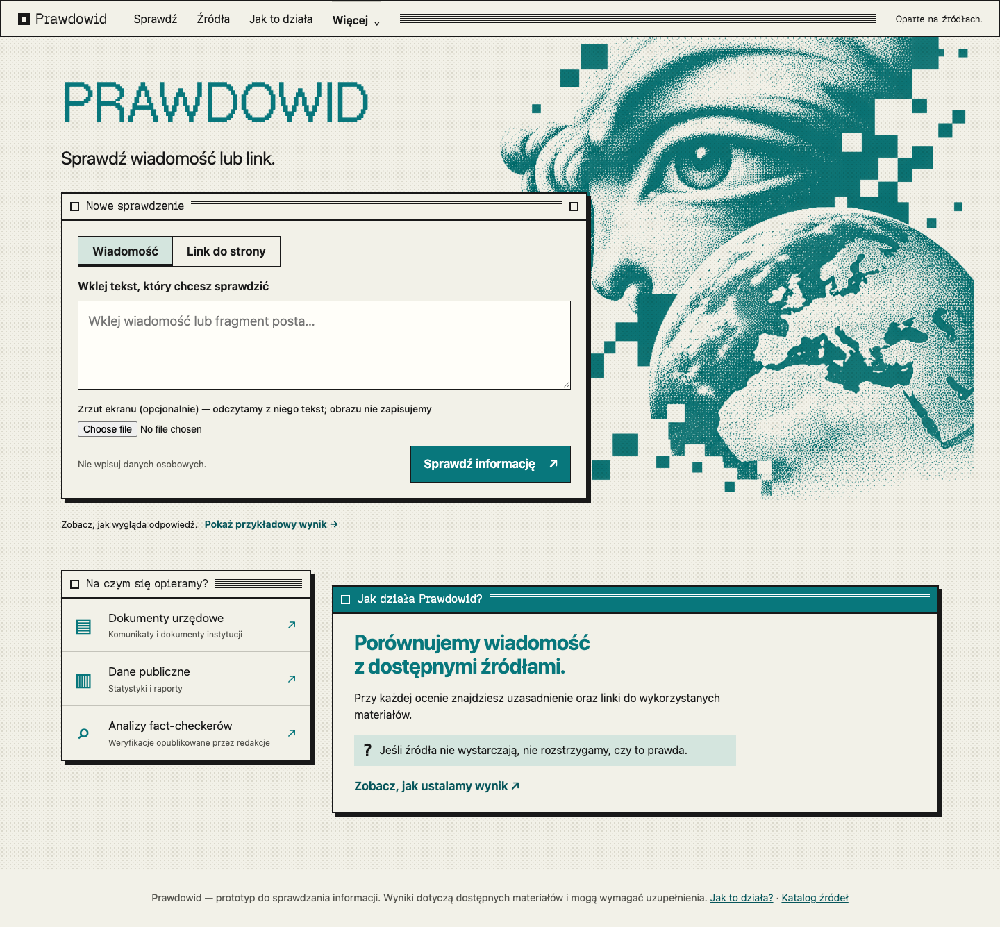

20 / Morski i jasny papier#08777c#07565b#f2f1e8#d4e5deGłęboki morski turkus na ilustracji, nagłówkach i przyciskach. Jasny, ciepły papier oraz subtelna morska zieleń w zakładkach i objaśnieniach.Pełny ekran ↗Telefon ↗Wynik ↗Wtyczka ↗